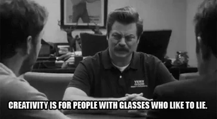

Technically we should practice more

To order or not to order that is the question
running a list of places weve visited, order wont matter, well go with ul
- New York City
- Buffalo
- Salt Lake City
running a ranking of foods i miss the most from nyc, well be going with order matters ol
- Korean cold noods, Naengmyeon to the common folk
- A juicy, properly smashed, burger, extra onions STAT
- Lowkey Fajitas, maybe i miss the frozen drinks more, thinking of a third option took too much time
the world of lists goes on and on, great Resource by Shay

Half Ass is better than NO Ass, true story